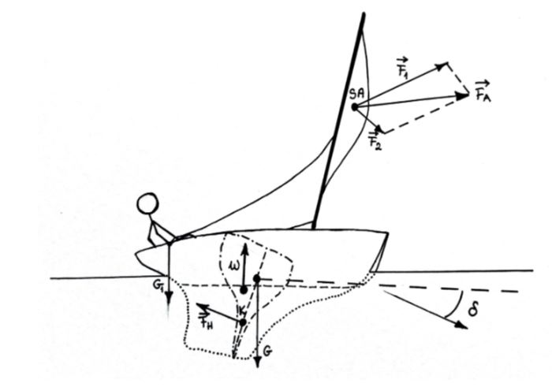

Siły działające na kadłub
Wcześniej rozpatrywaliśmy głównie siły działające na żagiel, przejdźmy więc do kadłuba łodzi.
Gdzie:
FA - wypadkowa siła aerodynamiczna
SA - środek aerodynamiczny żagla
F1 - siła napędzająca, składowa FA
F2 - siła przechylająca łódź, składowa FA
δ - kąt dryfu kadłuba
FH - wypadkowa siła hydrodynamiczna
K - środek aerodynamiczny kila jachtu
W - siła wyporu
G - ciężar jachtu
G1 - ciężar balastującego żeglarza
Na początek - wyjaśnijmy sobie jeszcze czym jest środek aerodynamiczny żagla i kila jachtu.
Środek aerodynamiczny żagla - to punkt, w którym przyłożona siła wypadkowa jest równoważna w działaniu sumie sił działających na poszczególne części żagla.
Jak to się dzieje, że jacht się nie przewraca?
Na rysunku wyraźnie widać, że siły aerodynamiczna i hydrodynamiczna działają na innych wysokościach. To zaś powoduje powstanie momentu* siły przewracającego jacht. Przeciwdziała temu jednak:
~siła wyporu jachtu
~jego ciężar
~ciężar żeglarza
*moment siły - miara tego, jak siła może obrócić przedmiot względem pewnego punktu. Jest zależny od promienia wodzącego.
Z powyższego rysunku można także wyciągnąć wniosek, że, poza przypadkiem, gdy wykorzystuje się fordewind, niemożliwe jest działanie siły napędzającej bez powstania siły, która przechylałaby jacht.